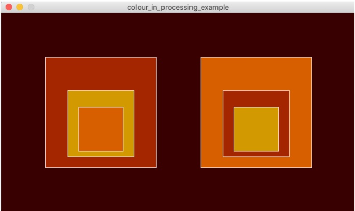

Create at least two separate complex figures from at least 3 different shapes in Processing. Each complex figure must be created by a function with parameters and contain at least 3 separate colours. The entire picture must have at least 5 colours total using each of the following at least once:
Assignment Example:
